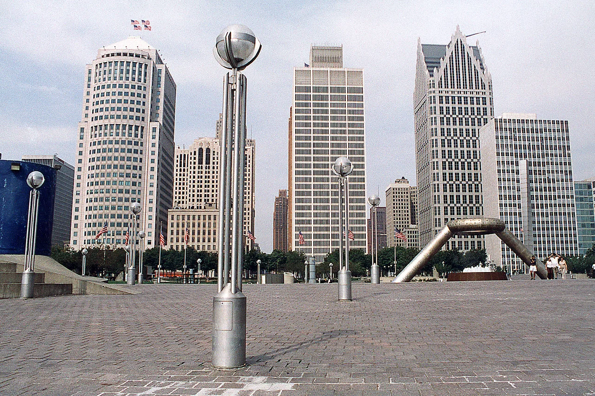
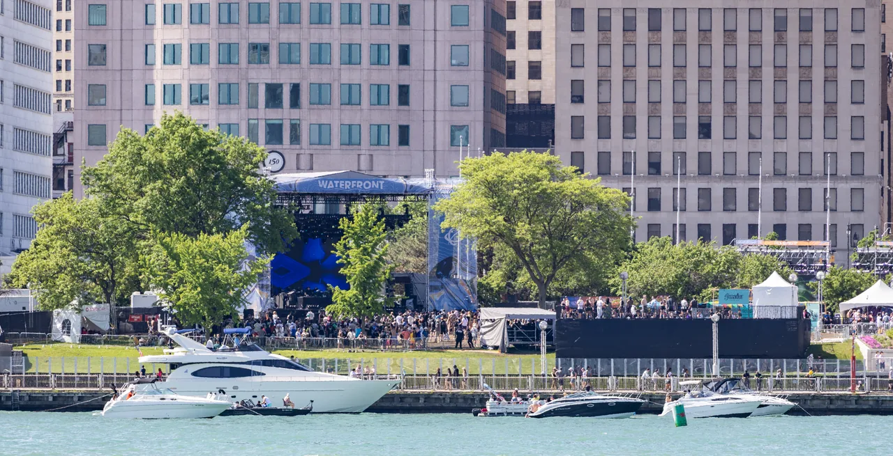

Movement Detroit guide
Movement Detroit: techno in the city that made it
From a free Detroit Electronic Music Festival in 2000 to six stages at Hart Plaza, with the city’s own artists kept inside the programme.
Techno comes home to the riverfront.
Movement puts an electronic festival in the city that created techno, on a concrete riverfront plaza where the music can be heard above and below ground. It began in 2000 as the free Detroit Electronic Music Festival and passed through several names and producers before Paxahau established the current form in 2006. The Memorial Day weekend event now uses six stages at Hart Plaza and programmes Detroit artists beside visitors from across electronic music.
What is Movement Detroit?
Movement Detroit is an annual electronic music festival held over Memorial Day weekend at Hart Plaza in downtown Detroit. Techno is its historical centre, but the programme also includes house, electro, ghettotech, breaks, hip-hop and experimental music. The festival's Detroit Stage is reserved for local artists, while the Underground Stage places harder music inside Hart Plaza's lower level.
The name can be confusing because the event began as the Detroit Electronic Music Festival, or DEMF, and briefly used Focus, Movement and Fuse-In before returning to Movement. Those names belong to the same festival lineage at the same riverfront site.
Hart Plaza and the Detroit riverfront.
Hart Plaza occupies fourteen acres between Jefferson Avenue and the Detroit River. Its concrete terraces, amphitheatre and lower-level spaces give Movement a shape unlike a field festival. The river and the Windsor skyline remain visible from much of the site, while the Underground Stage turns an existing enclosed space beneath the plaza into the closest thing the festival has to a warehouse room.
The venue also carries Detroit history unrelated to music. The plaza includes the Gateway to Freedom memorial, marking Detroit's role in the Underground Railroad, and Transcending, a monument to organised labour. Movement's official site treats those memorials and the architecture as part of the festival setting.

Hart Plaza sits at 1 Hart Plaza, at the foot of Woodward Avenue. Downtown hotels, the People Mover and QLINE are close enough that the official travel guide treats public transport and walking as normal routes to the gates. Accessibility at the historic venue has constraints, so the current official accessibility guide should be checked before each edition.
2000 to the present
From DEMF to Movement.
Carol Marvin and Pop Culture Media organised the first Detroit Electronic Music Festival in 2000 with Carl Craig as artistic director. It was a free, three-day celebration of Detroit's place in electronic music. The size of the response proved that a festival centred on Detroit techno could attract an international audience at home, though financing and management remained unsettled.
Ford sponsored the event in 2001 and 2002, when it became the Focus Detroit Electronic Music Festival. Derrick May produced the 2003 edition under the name Movement. Kevin Saunderson took over in 2005, renamed it Fuse-In and introduced paid admission as a way to keep the event operating.

Paxahau assumed production in 2006 and restored the Movement name. The organisers, funding and artistic leadership changed at each step. What stayed the same was Hart Plaza, Memorial Day weekend and the case that Detroit's electronic history deserved a major public festival.
The 2020 festival was cancelled during the Covid-19 pandemic after an attempted postponement and online programming. Movement returned to Hart Plaza in 2022.
Detroit techno on its home ground.
Detroit techno existed long before Movement. Juan Atkins, Derrick May and Kevin Saunderson developed the music through records, radio influences and small clubs in the 1980s. Eddie Fowlkes, Jeff Mills, Underground Resistance, K-Hand and Carl Craig expanded the city's sound through different generations. Movement did not create that history; it built a recurring public event around it.
The Detroit Stage gives current local artists their own platform, while other stages regularly place city figures beside international artists shaped by their records.
The Detroit Historical Society recorded the 2002 festival and later digitised three and a half hours of footage. Its archive includes Juan Atkins on the main stage, Eddie Fowlkes, K-Hand and interviews with the artists and organisers. These tapes show the event before the current branding settled, with Detroit's own performers already on the bill.
What music and stages to expect.
Movement has six stages, and the differences between them help explain why calling it only a techno festival is incomplete. The Movement Stage occupies the amphitheatre and carries the largest names. The Detroit Stage presents a local lineup. The Underground Stage uses the space beneath the plaza for a harder, enclosed room.
The Waterfront Stage has the widest brief, including funk, hip-hop, breakbeats and ghettotech. Stargate is framed as a Detroit block party, while the Pyramid Stage uses the open riverfront setting. Stage sponsors and exact programming can change, so these descriptions are orientation rather than a promise about a future timetable.
Techno is still the centre of the weekend. House and electro belong to the same Detroit history, while hip-hop, live electronics and leftfield bookings widen the programme.
| Stage | Setting | Programming role |
|---|---|---|
| Movement Stage | Hart Plaza amphitheatre | Largest names and headline-scale performances |
| Detroit Stage | Outdoor festival stage | All-Detroit programme across generations |
| Underground Stage | Below the main plaza level | Harder music in an enclosed concrete room |
| Waterfront Stage | Beside the river and trees | Funk, hip-hop, breakbeats, ghettotech and other routes |
| Stargate Stage | Open plaza setting | Detroit block-party character |
| Pyramid Stage | Riverfront side of the site | Broad electronic programme with an open-air backdrop |
Movement Detroit dates and lineup.
Movement takes place over the Saturday, Sunday and Monday of Memorial Day weekend. The official FAQ lists 29 to 31 May 2027 for the next edition. Gates, stage times, ticket conditions and the lineup should be checked on the official Movement site because those details change every year.
Use the official lineup and app for additions, withdrawals and set times. The Movement Detroit lineup page still shows the 2026 edition while the 2027 programme is pending, so it is more reliable than a copied list of names here.
Planning the weekend.
The official guide should be the starting point for the map, allowed items and lockers, while the accessibility guide explains routes, viewing areas and on-site assistance. Hart Plaza is central, but its concrete levels and stairs make footwear and route planning more important than they might be at a flat park. Weather on the riverfront can change quickly, and the permitted-bag rules should be checked before arrival.
Movement also extends beyond its gates. Detroit clubs and temporary venues programme parties throughout the week, often with artists who are not playing the main festival. Resident Advisor and local publications are more useful for that changing layer than an evergreen list. Tickets, transport and accessibility information still belong with the official organiser.
Movement Detroit FAQ.
What is Movement Detroit?
Movement Detroit is a three-day electronic music festival held at Hart Plaza over Memorial Day weekend. It began in 2000 as the Detroit Electronic Music Festival and has operated under the Movement name with producer Paxahau since 2006.
Where is Movement Music Festival held?
Movement is held at Hart Plaza, 1 Hart Plaza in downtown Detroit, beside the Detroit River at the foot of Woodward Avenue. The site has outdoor stages, an amphitheatre and a lower-level Underground Stage.
What kind of music is played at Movement?
Techno is the historical centre, joined by house, electro, ghettotech, breaks, hip-hop and experimental electronic music. The six stages have different identities, including an all-Detroit stage and a harder underground room.
When is Movement Detroit?
Movement runs on the Saturday, Sunday and Monday of Memorial Day weekend. The official festival FAQ lists 29 to 31 May 2027 for the next edition. Current hours should be checked on the official site.
Is Movement only a techno festival?
No. Movement is rooted in Detroit techno and gives the genre a central place, but its programme extends into house, electro, ghettotech, breaks, hip-hop and experimental music. The Waterfront and Stargate stages make that range particularly clear.
Sources.
Continue reading
Read next.
 Festivals~7 min read
Festivals~7 min readSziget Festival 2027: Dates, Music, Camping and Travel
Five days on Óbuda Island, with pop, rock and hip-hop beside club stages, theatre, circus and a rail link into Budapest.
Read article → Festivals~7 min read
Festivals~7 min readBoomtown Festival 2027: Dates, Location, History and Music
A five-day camping festival built as a fictional city, with soundsystem culture, electronic music, live bands and street theatre.
Read article → Festivals~7 min read
Festivals~7 min readMonegros Desert Festival 2027: Date, History and Guide
One long electronic event on exposed land near Fraga, with roots in Florida 135 and stages running through the night.
Read article → Festivals~7 min read
Festivals~7 min readARC Music Festival 2027: Chicago Guide, Stages and Travel
Chicago house history, international techno, the compact Union Park site and the city-wide After Dark programme.
Read article →